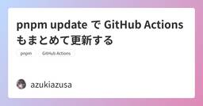

直近1週間の人気フィード
はてなブックマーク数を元に新着優先で並べ替え

Zod の z.compile() でバリデーションを高速化する 43
43
 azukiazusa のテックブログ2
azukiazusa のテックブログ2
Zod 4.5 で、スキーマを実行時に最適化された JavaScript へ変換する z.compile() が追加されました。コンパイル済みスキーマは通常のスキーマと同じ API を保ちながら、複雑なデータの検証を高速化します。この記事では基本的な使い方と仕組みを紹介します。
7日前

pnpm update で GitHub Actions もまとめて更新する 3 azukiazusa のテックブログ2
GitHub Actions で使用する Action をコミット SHA に固定すると安全性が高まる一方、更新作業が煩雑になります。pnpm 11.16.0 で追加された `pnpm update --include-github-actions` を使うと、パッケージと Action の更新を同じコマンドで管理できます。この記事では基本的な使い方を確認します。
1日前
Remix 3 Release Candidate 4 Remix Blog
Remix 3 RC is available now. A full-stack JavaScript framework built on web primitives and shipped as a single dependency.
6日前